String Instruments:
What are string instruments?
String instruments are a category of musical instruments that use vibrating strings to create sound. The violin, viola, cello, and double bass are among the string instruments, which make up the biggest family of orchestral instruments. The harp, guitar, banjo, mandolin, ukulele, and other stringed instruments aren't typically thought of as symphonic instruments.
What are the key elements of string instruments?
The majority of string instruments share the same fundamental components, however some have a few distinctive features. The tuning pegs that tighten or loosen the strings, the head where the tuning pegs are attached, the neck along which the strings and fingerboard run, the fingerboard where the strings are struck to produce sound, the body where the sound resonates and is amplified, the bridge where the string vibration ends, and the tailpiece where the strings end are the basic components of string instruments. The sound escapes the instrument's body through sound holes, also known as f-holes, on the majority of string instruments. However, sound holes are absent from solid body electric guitars and electric basses. Only violins and violas have a chin rest, although orchestral strings have a scroll, a peg box, and fine tuners.
What are string instruments mostly made of?
The majority of string instruments are constructed of wood, with some metal and plastic accents. Wood makes up the body, fingerboard, head, and neck. A stringed instrument may have strings made of nylon, steel, or gut, among other materials. The majority of symphonic string instruments are played using a bow, which is typically made of wood and plastic with strings made of real horse hair.
How do string instruments work?
In essence, string instruments make sound by vibrating their strings, which causes the sound to reverberate inside the instrument's body and amplify when it leaves. Fingers, a plectrum, or a bow can all be used to pluck, strike, or bow the strings to create sound.
What instruments are in the string family?
Traditional String Instruments:
Violin – The violin is the smallest and most versatile string instrument in an orchestra. It is the largest set of instruments in the orchestra and frequently plays the melody. The left hand holds the neck of the violin while the lower bout is supported by the space between the chin and left shoulder. The right hand uses the bow to vibrate the strings while the left hand presses down the strings when playing the violin.
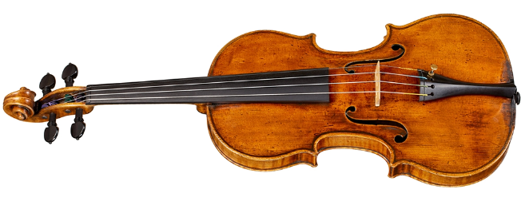
Viola – The viola resembles the violin almost identically, with the exception of its tiny size difference. Compared to a violin, the sound is a little richer and has a little bit less range. The viola is played and held in a manner similar to that of the violin.
Cello – The cello is significantly larger than the violin and viola yet has a similar appearance. The cello is around four feet long, far too large to fit between your chin and shoulder. The cello is typically held up off the ground by an end pin or floor-placed peg. The cello is leaning back against the cellist's torso as she sits. While the right hand is in charge of utilising the bow to produce sound, the left hand is in charge of applying pressure to the strings on the fingerboard.
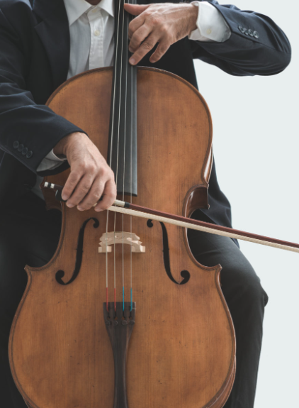
Double Bass – The largest string instrument in an orchestra is the double bass, sometimes known as an upright bass. The lowest range in the string family, the double bass can reach heights of up to six feet. In order to press the strings down on the neck and fingerboard, the bassist will stand up to play the instrument, pressing it back somewhat against his or her body. The right hand is in charge of utilising the bow to make the sound, just like on the violin, viola, and cello.
Other Non-Traditional String Instruments:
Guitar – Probably the most widely used string instrument is the guitar. It is typically absent from symphonic settings but is present in the majority of current, popular, and contemporary music. With some notable exceptions, the guitar is constructed similarly and contains parts that are identical to those of its orchestral siblings. Frets are elevated metal bars that are positioned across the fingerboard of guitars and serve as note separators. Many acoustic guitars have a single sound hole exactly beneath the strings, whereas some guitars have two sound holes, or f-holes, on the left and right side of the body. Instead of having sound holes, solid body electric guitars contain integrated electronics that send audio impulses to an amplifier, which digitally boosts the sound. As the guitarist sits, the left hand reaches underneath and around the neck to press down the strings with the right hand. The lower portion of the torso rests on the right leg. The desired tone is produced by striking the strings with the right hand's fingers or plectrum.
Ukulele – A very small guitar with only four strings is called a ukulele. One may argue that the ukulele is the most straightforward stringed instrument to learn. The ukulele, which is becoming more and more well-liked due to its small size, portability, and recent use in hit songs, is a great instrument for young kids who want to make music but lack the size, strength, and ability to play guitar. The ukulele is built almost exactly like an acoustic guitar, however it is tuned differently. It is also performed similarly, however it produces a sound with far less effort and coordination.
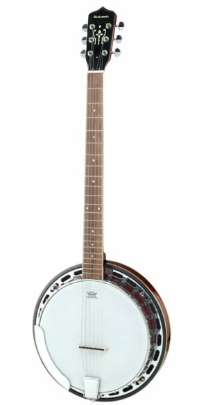
Banjo – A very distinctive member of the string family is the banjo. Banjos can be found with four, five, or even six strings. A synthetic tensioned head made of materials similar to a drum head is attached to a circular rim made of wood and/or metal that serves as the banjo's body. This results in a very distinctive tone that is frequently heard in bluegrass and country music. The versatility of the banjo rivals that of the guitar and there are many different tuning options available. It is also played identically, either resting on the performer's leg while they are seated or holding it while standing.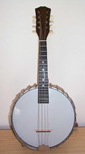
Mandolin – Mandolins are a group of three different types of stringed instruments that belong to the lute family: flat-back, round-back, and arch-top mandolins. The arch top mandolin is frequently heard in folk and bluegrass music in the United States. The mandolin normally has 8 strings, tuned in unison in four groups of two, and is constructed with frets similar to those on a guitar and ukulele. The mandolin is held and played in a manner similar to that of its string relatives, with the right hand either picking or using a plectrum to press the strings against the fretboard with the left hand.Harp – The harp, one of the most unusual stringed instruments ever, is nearly 6 feet tall and has 47 strings of various lengths. The piano's white keys and the strings are tuned to the same pitch. The harp can play all of the notes on the staff, including all sharps and flats, thanks to the seven foot pedals that allow the player to modify the pitches of the strings by half steps. The harp is held in a seated position with the performer's legs on each side, and the instrument is gently leaned against the right shoulder of the player to create the sound.
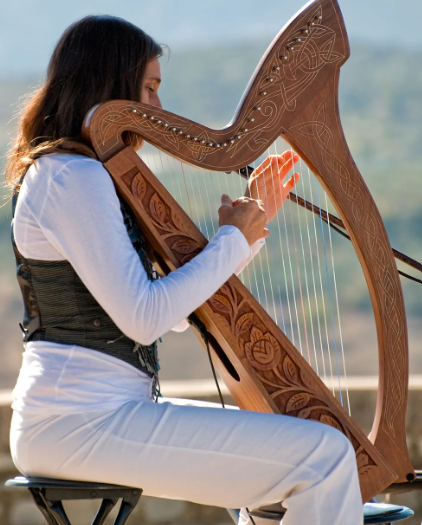
Woodwind Instruments:
What are the characteristics of woodwinds?
The term "woodwinds" is a bit misleading. The majority of the instruments in this family are now made of wood, plastic, metal, or a combination of these materials, whereas previously all of them were made of wood. The woodwind family of instruments all have holes along the body, a mouthpiece at one end, and an opening where the sound is released at the other.
What instruments are in the woodwinds family?
Flute – Of all the woodwind instruments, the flute is the most ancient. It is held in a sideways position with both hands and is about two feet long. The mouthpiece is at one end, and the flautist covers various holes on the body while blowing into it to alter the pitch. The highest notes in the family of woodwind instruments are produced by piccolos, which are half the size of a flute. The piccolo's smaller size results in much higher pitches being generated.
Clarinet – With a mouthpiece at the top end and a straight opening at the bottom, the clarinet is a long, cylindrical instrument that is held upright with both hands. The sound produced by clarinets can range from a brilliant tone to a darker, richer sound, and they come in a variety of sizes. The clarinettist will blow through the mouthpiece, which has holes that may be covered with the fingers to modify the pitch.
Saxophone – In comparison to the clarinet, the saxophone is substantially bigger, with a broader cylindrical body and a curving bell opening at the bottom. The varying sizes of saxophones allow for a wide range of pitch. All saxophones feature a mouthpiece at the upper end that makes sound by using a reed when the player blows into it. The soprano saxophone has a bell-shaped aperture at the bottom, but otherwise resembles a clarinet. The baritone saxophone has a significantly greater body curve than the alto and tenor saxes, which both have a curved bell-shaped hole at the bottom. To adjust the tones the instrument will generate, cover the holes along the body with your fingers over the keys.
Oboe – Without the mouthpiece being distinctly different, the oboe may be mistaken for the clarinet with ease. The oboist blows through a "double reed" mouthpiece, which has two reeds, to create the sound on the instrument. The clarinet-like instrument is held upright with both hands, and the fingers are used to cover the sound holes to alter the pitch. Oboes are frequently used in orchestral settings and in film and television compositions. One fascinating fact is that the oboe is in charge of tuning the ensemble prior to a performance.
Bassoon – The bassoon is a 9-foot-long piping instrument that must be bent in half for a performer to comfortably play it. The mouthpiece at one end is a "double reed," just like the oboe. When you blow into the double reed mouthpiece, air moves down the tube and out the other end, creating sound. There are several holes all over the body, and by pressing down on the keys that cover the holes, the pitch can be altered. Typically, the bassoon provides harmonic support and lower-pitched, melodic sounds.
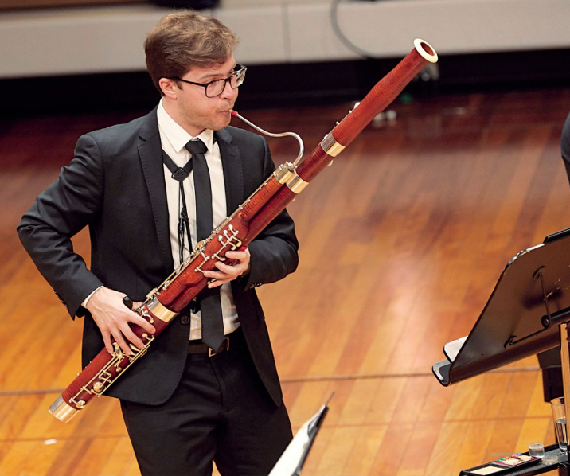
The English Horn and Contrabassoon, both double reed instruments closely related to the oboe and bassoon, are additional instruments in the woodwind family. Both more classical and symphonic kinds of music as well as a range of popular and contemporary genres use these instruments. Woodwinds play multiple characters in Peter and the Wolf, and their distinctive sounds help the audience picture the characters. Additionally, over the years, woodwinds have appeared in a number of radio songs. The Mamas & the Papas smash "California Dreamin" and practically every Jethro Tull song have the distinctive flute sound. Clarinet can be heard in songs by Paul McCartney, Joni Mitchell, Van Halen, Steely Dan, and Billy Joel. The iconic Sonny and Cher song "I've Got You Babe" features even the oboe and bassoon. The saxophone can be heard creating vibrant textures in songs like "Born to Run" by Bruce Springsteen, "Bad" by Michael Jackson, and "Us and Them" by Pink Floyd. In a lot of modern music, from rock and pop to rap and hip-hop, the saxophone is a common instrument.
What are woodwinds typically made of?
All woodwind instruments used to be made of clay and wood. Woodwind instruments today are constructed from a variety of materials, including wood, metal, plastic, platinum, and others. The majority of woodwind instruments use reeds, which vibrate when air passes over them and transmit sound through the instrument's body. Reeds are linked to the mouthpiece and made of springy cane wood.
How do woodwind instruments work?
Despite the fact that woodwind instruments might differ in size, form, and composition, they nonetheless have a number of characteristics. All of them generate sound by blowing air over or through a specific kind of reed, which causes vibrations that reverberate throughout the instrument. Every woodwind instrument has holes along the body, some of which are concealed by keys. The pitch of the sound generated by the instrument is altered when the holes are covered by fingers or keys that are depressed.
The "air reed" that is seen on flutes is a common feature. Similar to blowing over a bottle opening, the flautist blows over the top of a hole in the mouthpiece.
Single-reed instruments include the clarinet and the saxophone. When air flows over and through the mouthpiece and reed, the reed vibrates.
Instruments with "double reeds" include bassoons, English horns, and oboes. Single reeds and double reeds are relatively similar, but double reeds have slightly more sophisticated mechanics. But similarly, the sound that emanates from the instrument is produced by the reeds' vibration.
The Verdict on woodwind instruments
Woodwinds produce vibrant textures and sounds that breathe new life into any piece, with the ability to perform in a variety of musical contexts including classical, big band, jazz, modern rock, and hip hop. Woodwinds bring colour, sharpness, and punctuation, whether they are playing background support or piercing solos.
Brass Instruments:
Brass instruments, also known as labrosones, which appropriately translates to "lip-vibrated instrument," are distinguished by their size, sound, and material. They produce sounds by reverberating and amplifying the vibration of the lips through a "tubular resonator."
How Do Brass Instrument Works & Project Sound?
Contrary to their names, brass instruments are not just made of brass and were originally horns. The air inside a brass instrument vibrates when lips move, producing sound through the instrument. Its valves and tubes serve as modifiers and amplifiers for a clearer pitch.
Brass instruments come in a variety of shapes and sizes. They are distinguished by their range of pitch and note based on the length of the tubing, and whether it allows slides, valves, or crooks to manipulate the resonance of the sound, or in a more direct approach, by the modification in the vibration of the lips like in the instrument shofar and bugle, which is a Jewish instrument made out of sheep's horn and used during religious holidays.
However, the ability to play a brass instrument well depends on the player's embouchure, which is the succession of lip vibrations, muscle tension in the lips and body, and airflow.
In contrast to woodwind instrument players, who frequently shave the reed for best condition, trumpet players' lips are their "reeds," according to Alistair Mackie, a Joint Principal Trumpet of the Philharmonic Orchestra in London. The buzzing of the lips and the degree of control, force, and power applied to the mouthpiece make a significant difference in a brass player's talent and ability.
Orchestras and brass bands are recognised for using brass instruments. In nations like England, brass bands are well-known culturally. The brass band gained popularity during the industrial revolution as a way to distract workers from political unrest and uprisings while also providing them with entertainment.
What instruments are in the brass family?
Trumpet - The trumpet developed as a result of modifications made to the bugle, although the development of brass instruments began with natural materials like shells and horns. The instrument was first made of brass in the fifteenth century, and valves, along with a variety of tubing lengths, were developed in the late eighteenth century.
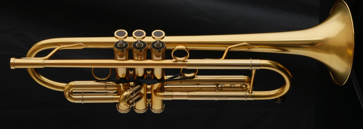
With respect to its construction, its sound changed and became more diversified. The bass trumpet, sometimes known as a pronunciation trumpet, has the lowest register and is one octave below the regular B♭ or C trumpet. Piccolo trumpets have the highest range of note or pitch, also known as the register. The mouthpiece's design has an impact on how it sounds as well; a deep cup gives a mellower tone, while a shallower cup generates a brighter, more piercing sound. Trumpets have become a common instrument used in jazz and classical ensembles. It is still heard today, not just in orchestras but also in contemporary bands and mainstream culture. It can be heard until today mixed in pop culture like in modern bands and not limited to orchestras. Trumpets are known in orchestras as soloists for reasons that with a slightly longer tubing, and it delivers a brighter and clearer tone. In the brass section, it is dominating based on its volume. In comparison to other brass instruments like the cornet, the trumpet’s notes snap less efficiently, making a jazzy, slightly raspy, “colored” notes, making it easier to play.

- The speed of the air molecules' vibration in the instrument, which is managed by the musician's lungs and diaphragm, is controlled.
- Measurement and strain of embouchure
- Additionally, on a modern French horn, the activity of the valves, which the performer controls in terms of speed and control, courses the air into other areas of tubing.
The rotating valves are the component of horns that is most frequently made. Even so, older horns have cylinder or piston valves; the Vienna horn, for instance, uses pumpenvalves or double cylinder valves.
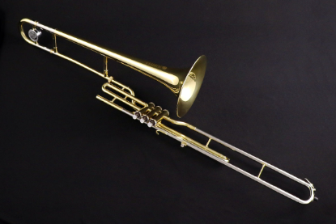
Trombones - Up to the 1700s, the trombone was known as the sackbut. It has a sliding tube, a cylindrical bore, and a flared bell that make it popular among brass-related objects. It is also thought to be the simplest brass instrument to play. Instead of using valves, the instrument draws both fundamental and intermediate tones by controlling the pitch of a sliding tube. The bell joint is supported by the player's left shoulder, while the cross stay that positions the lengthy structure is controlled with the right hand. The bore of trombones varies. Older bores have bells that are the same width as trumpets, followed by medium and big bores. Bass trombone sections are played on the trombone with the widest bore. Most trombone players prefer tenor trombones, which have a basic tone of B♭.Cimbasso - The Cimbasso is unique among trombones for its spectrum of tones, which vary from warm and brilliant to sombre and ominous. It has a cylindrical bore, three to six piston or rotary valves, and is typically tuned in F at the moment, however there are additional models available in E♭, C, and B♭. Although it uses the same pitch range as the contrabass trombone and tuba, its technique relies on using valves more quickly than the contrabass trombone does. Opera scores are where the modern Cimbasso is most often found. Some composers, like as Ottorino Respighi and Bian Ferneyhough, use the instrument outside of this setting in their symphonies and orchestral compositions. It can also be heard on the soundtracks of certain movies.
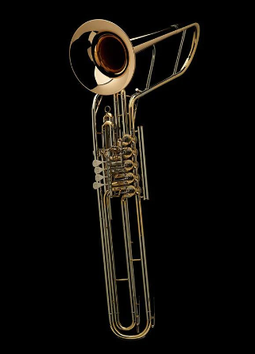

Tuba - Some people believe the tuba originated from heaven because of its powerful, otherworldly sound, and its name, which is a Latin term that simply means "tube." This belief is ironic because the tuba's register ranges the lowest of the brass section. The tuba has a huge scale length and an even bigger bore, as well as three to six valves. It is played using a large, deep mouthpiece in the form of a cup or bowl.
There are four main pitches in it: F, E♭, C, and B♭. The contrabass tuba, which is astoundingly long at 580cm (or around six metres), has an earth-shattering tone, and the Sousaphone, which is designed for a marching melody.
Percussion Instruments:
Music instruments that make sound when struck, scraped, shook, or hit belong to the percussion family. The oldest musical instruments in existence after the vocal are percussion instruments, which provide some of the most thrilling and energetic sounds in music. The orchestra's largest family of musical instruments is the percussion family, which includes the timpani, xylophone, bass drum, snare drum, cymbals, and tambourine.
What are the key elements of percussion instruments?
There are many different types of percussion instruments, some of which have numerous, intricate parts and others which are simply built with a few moving parts. The fundamental characteristic of percussion instruments is that sound must be produced by hitting, striking, shaking, or scraping them in a way that causes reverberation or vibration.
What are percussion instruments mostly or typically made of?
Different types of materials can be used to create percussion instruments. Wood, metal, and plastic are used to construct both tuned and untuned percussion instruments. The drum family of percussion instruments is composed primarily of wooden instruments with stretched animal skin or plastic drum heads. Xylophones, marimbas, and vibraphones are frequently built of metal and wood. Metal alloys used to make cymbals have a very ambient, shimmering sound when struck.
Mallets can be fashioned from wood, linen, or animal leather, as opposed to drumsticks, which are commonly composed of wood. Drum heads used to be manufactured entirely of animal skins, but thanks to technological advances, there are now superb plastic options that can accurately mimic the sound of an animal skin drum head.
What are the categories of percussion instruments?
There are two types of percussion instruments in the family: those that are pitched and those that are not. The xylophone, marimba, glockenspiel, piano, and keyboard are some examples of orchestral percussion instruments that are tuned with precise pitch. When struck or hit and notated in accordance with conventional music notation, tuned percussion instruments can produce an audible note.
They frequently play musical compositions' melody sections. Drums, cymbals, triangles, tambourines, castanets, and other members of the percussion family lack specific pitch. Similar rhythmic symbols to those used in standard music notation will be used in the notation for unpitched percussion, but the lines and spaces on the staff represent various drums, instruments, or cymbals.
How many types of percussion instruments are there?
Although tuning skills serve as a general dividing line between different percussion instrument types, regional variations in percussion instruments are frequently noticeable. The glockenspiel, tubular bells, marimba, xylophone, vibraphone, and marimba are some of the most popular tuned percussion instruments. Common names for these include idiophones, which are musical instruments whose entire body vibrates to make the sound.
What are the most common or well known percussion instruments?
Cymbals - Large circular discs known as cymbals are often constructed of bronze and an alloy metal. Untuned percussion instruments called cymbals range in size from extremely small to very huge. The most common way to play a cymbal is to strike the metal disc with a stick, mallet, or brush. Cymbals are used in almost every form of ensemble, including big bands, orchestras, and pretty much any group with a drum kit. The sound is deeper and more powerful the bigger the cymbal.
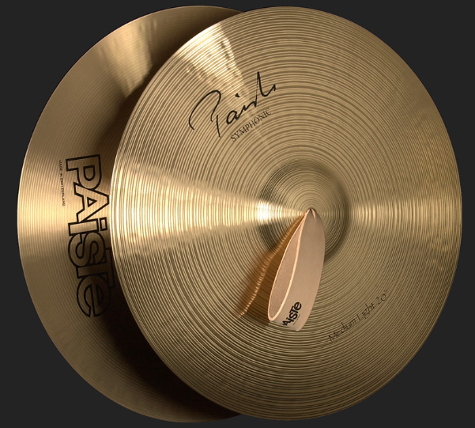
Snare Drum - The snare drum is a smaller, untuned drum than the bass drum. Snare drums are frequently made of wood or brass and have two heads—one on top and one at the bottom—as well as metal wires that are fastened to the bottom. When the snare drum is struck, these snares produce a distinctive sound. To alter the tone of the drum, the snares can be tightened and released with a lever. Orchestras, marching and concert bands, drum lines, and of course modern bands frequently employ snare drums as well as bass drums. Snare drums are typically played with sticks and brushes and are recognised for their loud staccato sound.
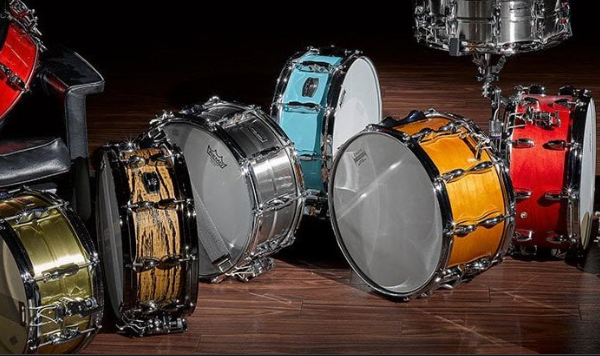
Bass Drum - The bass drum is utilised in many different musical contexts and is available in a range of sizes. The largest drum in the orchestra, bass drums are frequently encountered in symphonic or performance ensembles. Rock, jazz, and modern music drum sets will also include a bass drum that is set up on the floor and played with a foot pedal or beater. Additionally, marching bands frequently contain close to a dozen tuned bass drums that are normally attached to the performers who hit the drums with a mallet in each hand while standing on either side.
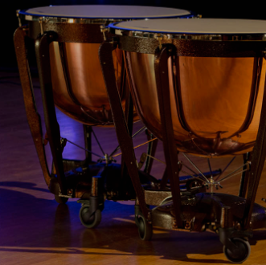
Timpani - Timpanis, also known as kettle drums, are made of a big copper bowl with a skin that is stretched over the top as the drum's "head." To raise and reduce the pitch, the tension of these drum heads can be tightened or loosened. The drum's head is struck with specialised mallets called timpani mallets to produce the sound. Timpanis occur in a range of sizes, and each drum normally has a perfect fifth-sized interval range. Orchestras and marching bands are only two examples of groups that use timpais.Xylophone - The xylophone's layout is comparable to a piano keyboard. The xylophone's hardwood keys allow instrument to be tuned to a wide range of musical scales. The sound is produced by striking the vibrating keys with either two or four mallets. All around the world, xylophones can be found in classrooms and are an excellent teaching instrument for children and students to help them comprehend basic musical ideas.
Glockenspiel - The fact that the glockenspiel is constructed of metal or metallic keys rather than wooden ones is one of the main distinctions between the glockenspiel and the xylophone. Similar to how glockenspiels of various sizes may be seen in orchestras and marching bands, keys are struck with mallets during performances to create sound.
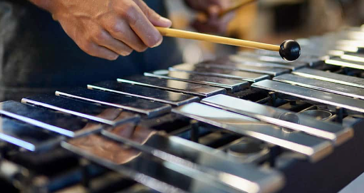